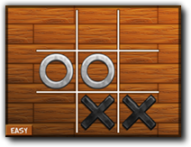

Tutorial
Page 1 of 7
Tic - Tac - Toe
Welcome to GameMaker. This tutorial will demonstrate the use of GameMaker's scripting language
to create a Tic-Tac-Toe (sometimes known as Noughts-and-Crosses) game. It is expected that you
already have a basic understanding of how GameMaker works.
Whilst it's unlikely you will not know how to play Tic-Tac-Toe it's worth re-iterating how
Tic-Tac-Toe is played on a 3x3 grid. Players take it in turns to place their piece onto an
empty cell on the grid. If a player creates a horizontal, vertical or diagonal line of three of
their pieces he wins the game. If the grid is completely filled and no rows of three pieces exist the game
is over and it ends in a draw.
In this tutorial the first player to place their piece will be the human player and the computer will
place second. The human player uses the mouse to select the cell they wish to place their piece in.
The final game will look as follows:

The game will use some special resources created for this purpose. To find them on your computer, please go to the top of the GameMaker screen and select the Help
drop-down menu. You will see an option marked Open Project in explorer. If you select that then the standard file explorer will open showing the contents of you
GameMaker project directory, and there you can browse to "Assets" all resources are stored here.
Click on the Next button to go to the next page of the tutorial.